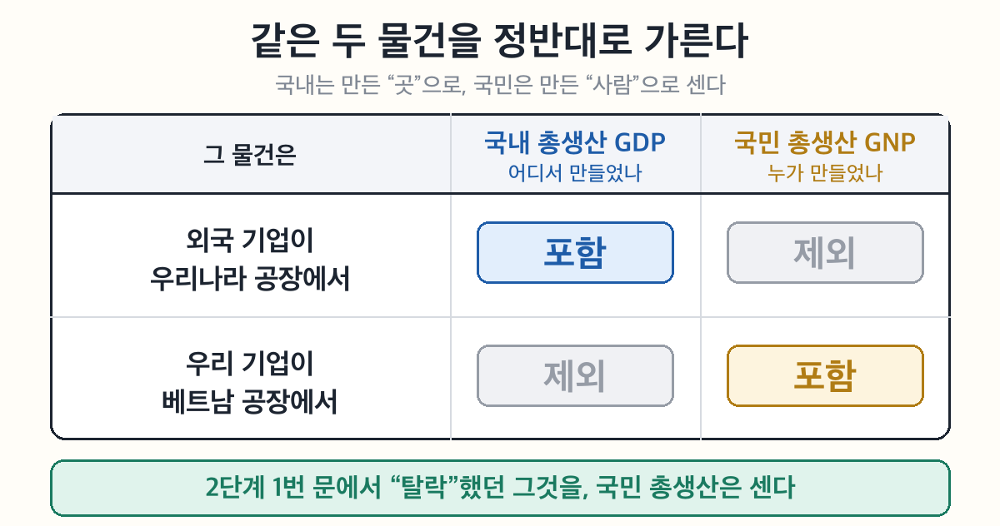

사회② 국민경제와 국제거래 5-1차시 — 국내 총생산과 경제생활 (정답·모범답안)
엄마가 해준 밥은 0원, 배달 떡볶이는 15,000원?
GDP에 들어가려면 문 네 개를 다 통과해야 한다. 하나라도 걸리면 탈락.
| 문 | 통과 조건 | 걸리는 예 |
|---|---|---|
| 국경 | 우리나라 땅 안에서 만든 것 | 우리 기업의 베트남 공장 운동화 |
| 1년 | 올해 새로 만든 것 | 작년에 산 교복을 올해 중고로 판 것 |
| 최종 | 완성품만 (중간재 제외) | 라면 값과 따로 센 밀가루 값 |
| 시장 | 돈을 주고 거래된 것 | 엄마가 끓여 준 미역국 |
왜 네 개나? 하나라도 빼면 같은 것을 두 번 세거나, 이미 센 것을 또 세게 된다.
1인당 GDP = GDP ÷ 인구. 나라 전체가 아니라 한 사람 몫을 보는 값이다.
🔴 함정 — "GDP가 커지면 1인당 GDP도 커진다" 는 틀릴 수 있다. 인구가 GDP보다 더 빨리 늘면 나누기 값은 오히려 줄어든다.
• 나라 규모를 볼 때 → GDP
• 국민 생활 수준을 볼 때 → 1인당 GDP
같은 물건을 정반대로 가른다 — 한쪽이 넣으면 다른 쪽은 뺀다.
| 국내(國內) | 국민(國民) | |
|---|---|---|
| 기준 | 장소 — 어디서 만들었나 | 사람 — 누가 만들었나 |
| 포함 | 외국 기업의 한국 공장 | 한국 기업의 베트남 공장 |
| 제외 | 한국 기업의 베트남 공장 | 외국 기업의 한국 공장 |
외우는 법 — 내(內)는 안, 곧 땅이다. 민(民)은 사람이다.
GDP는 만능 자가 아니다. 못 재는 것이 세 갈래다.
| 갈래 | 무슨 뜻 | 예 |
|---|---|---|
| 안 세는 것 | 돈이 안 오가면 안 잡힘 | 집안일·자원봉사 |
| 거꾸로 세는 것 | 나쁜 일인데 GDP는 오름 | 교통사고 수리비·환경오염 복구비 |
| 못 보는 것 | 총량이라 나눠진 모양을 못 봄 | 빈부 격차 |
이어지는 이야기 — "못 보는 것" 은 다음 차시에도 나온다. 물가 지수의 평균, 실업률의 분모도 같은 한계를 가진다.

사회② 국민경제와 국제거래 5-1차시 — 국내 총생산과 경제생활 (정답·모범답안)
🎙️ 2학기 첫 차시. 축은 "나라의 몸집을 재는 자 GDP를 손에 쥐어 보고, 그 자에 안 잡히는 것을 발견한다." 도입의 미역국(0원) ↔ 배달 떡볶이(15,000원) 대비가 2단계 4번 문과 6단계 ①갈래에서 두 번 회수된다. 이 회수를 놓치지 말 것 — 학생 입장에선 처음에 이상했던 게 끝에 설명되는 구조라 몰입이 유지된다.
📌 학습 목표
- 국내 총생산의 의미와 측정 방법을 설명할 수 있다.
- 국내 총생산의 증가가 우리 생활에 미치는 영향과 그 한계를 말할 수 있다.
✨ 오늘의 고급 단어
| 낱말 | 쉽게 말하면 | 한자 뜯어보기 | 문장 속에서 |
| 총생산(總生産) | 다 합쳐서 만들어 낸 것 | 총(總, 모두) + 생산(生産, 만듦) | "한 해 동안의 총생산을 더한다." |
| 최종 생산물 | 더 가공하지 않고 바로 쓰는 물건 | 최종(最終, 맨 끝) + 생산물 | "스마트폰은 최종 생산물이다." |
| 경기(景氣) | 경제 전체가 잘 돌아가는 정도 | 경(景, 형편) + 기(氣, 기운) | "요즘 경기가 나빠졌다." |
| 분배(分配) | 만들어 낸 것을 나누는 것 | 분(分, 나눌) + 배(配, 몫) | "성장해도 분배가 나쁘면 갈등이 생긴다." |
🎯 여기가 핵심! 이 차시 어휘 부담은 낮은 편이다. 다만 최종 생산물은 정의만 읽어선 안 잡히고 반드시 반례(부품)와 짝지어야 잡힌다. '경기'는 일상어 "경기가 안 좋다"로 이미 들어봤을 테니 그 경험을 끌어와 정의에 붙이면 빠르다.
📖 1단계: 나라의 몸집을 어떻게 재나?
A국은 자동차를 200만 대, B국은 100만 대 만든다. 자동차만 만드는 나라라면 A국의 경제 규모가 더 크다고 할 수 있다. 그런데 진짜 나라는 자동차도 만들고, 옷도 만들고, 미용실 서비스도 판다. 자동차 1대와 옷 1벌은 그냥 더할 수가 없다. 그래서 모든 생산물을 ①시장 가격으로 바꿔 계산한 다음 더한다.
이렇게 한 국가의 국경 안에서 1년 동안 생산된 최종 생산물의 가치를 시장 가격으로 계산하여 모두 더한 것을 ②국내 총생산(GDP)이라고 한다. 여기에는 눈에 보이는 재화뿐 아니라 미용·배달 같은 ③서비스도 함께 들어간다.
(교과서 원문: "한 국가의 국경 안에서 1년 동안 생산된 최종 생산물의 가치를 시장 가격으로 계산하여 모두 더한 것이 국내 총생산(GDP)이다. 최종 생산물에는 재화와 서비스가 모두 포함된다." — 천재교육 사회②(구정화) 92쪽)
🎯 여기가 핵심! 왜 시장 가격인가를 반드시 짚는다. 지도서가 명시한 논리 — "자동차 1대와 옷 1벌을 직접 더하여 경제 규모를 비교할 수 없으므로, 생산물을 시장 가격으로 평가한 후 더하는 방법을 사용"(지도서 164쪽). 학생은 GDP를 그냥 정해진 공식으로 받아들이기 쉬운데, 단위를 통일하려는 발명품으로 제시하면 납득이 다르다.
③ '서비스'를 빠뜨리는 학생이 많다. GDP를 공장에서 나오는 물건으로만 상상하기 때문. 미용실·배달·학원처럼 형태 없는 것도 생산임을 예로 못 박을 것.
📖 2단계: GDP에 들어가려면 문 네 개를 통과해야 한다
GDP의 정의는 한 문장이지만, 그 안에 조건이 네 개 숨어 있다. 네 개를 다 통과해야 GDP에 들어간다.
| 문 | 조건 | 통과 ✅ | 탈락 ❌ |
| 1 | 한 국가의 ④국경 안에서 | 외국 기업이 우리나라 공장에서 만든 자동차 | 우리 기업이 베트남 공장에서 만든 옷 |
| 2 | ⑤1년 동안 새로 생산된 것 | 올해 새로 만든 새 옷 | 작년에 만든 옷을 올해 중고로 판 것 · 올해 산 영화표를 올해 되판 것 |
| 3 | ⑥최종 생산물의 가치만 | 스마트폰 한 대 값 | 그 안에 든 반도체·배터리 값 |
| 4 | ⑦시장에서 거래된 것만 | 배달앱으로 시킨 떡볶이 | 엄마가 집에서 해 준 떡볶이 |
(교과서 원문: "생산자의 국적에 상관없이 우리나라 국경 안에서 생산한 것이면 우리나라 국내 총생산에 포함한다." / "1년 동안 새로 생산한 것만 포함한다. 작년에 생산한 재고품이나 중고품을 올해 거래하더라도 올해의 국내 총생산에 포함하지 않는다." / "재료나 부품은 제외하고 최종 생산물만 포함해야 한다." / "시장에서 거래되는 것만 포함한다. 집에서 직접 길러 먹는 채소나 집에서 하는 요리는 시장에서 거래되지 않기 때문에 국내 총생산에 포함하지 않는다." — 천재교육 사회②(구정화) 93쪽)
🎯 여기가 핵심 — 이 표가 차시의 척추다. 교과서 93쪽 「스스로 탐구」를 그대로 4행 표로 옮긴 것이므로, 시험 출제도 여기서 가장 많이 나온다. 사례를 던지고 몇 번 문에서 걸리는지 묻는 형태로 반복 훈련시킬 것(활동 1이 그 훈련이다).
최대 오개념 = 3번 문. 지도서가 유의점으로 특별히 못 박은 지점 — "최종 생산물의 가치만 더한다는 뜻이 재료나 부품 생산 활동을 무시한다는 의미가 아니라, 재료나 부품은 최종 생산물에 이미 포함되어 있어서 이중 계산을 피하기 위함"(지도서 165쪽). 학생은 "부품 만든 사람은 억울하겠다"로 오해한다. 빼는 게 아니라 겹치지 않게 하는 것이라는 표현을 그대로 쓰면 잘 통한다.
2번 문 보충 — 중고 거래가 왜 안 잡히는지: 작년에 이미 한 번 셌기 때문. "생산"을 센 것이지 "거래"를 센 게 아님. 다만 중고 거래를 중개한 플랫폼의 수수료는 올해의 새로운 서비스 생산이라 잡힌다(심화·묻는 학생에게만).
⚠️ 교사 대비 — "그럼 수출하는 반도체는요?" (한국이 반도체 수출국이라 실제로 나오는 질문)
답: 그 반도체는 우리나라 GDP에 들어간다. 3번 문의 예외가 아니라, 3번 문의 전제가 성립하지 않는 경우다.
부품을 빼는 근거는 "최종 생산물 값에 이미 포함되어 있어서"(93쪽)인데, 반도체를 수출하면 그것이 들어간 스마트폰은 다른 나라 GDP에 잡힌다. 우리 GDP엔 그 스마트폰이 없으므로 "이미 포함"이라는 전제가 깨진다. 여기서 반도체마저 빼면 우리 생산이 통째로 사라진다.
숫자로 확인 — 한국이 반도체 100을 수출 → 한국 GDP +100. 외국이 그것으로 스마트폰 300을 만들어 판매 → 외국 GDP +200(300−100). 합 300 = 최종 스마트폰 값. 이중 계산 없음.
⭐ 한 줄 정리: '최종 생산물'은 물건의 성질이 아니라 그 경제 안에서의 쓰임이다. 같은 반도체가 국내 스마트폰에 들어가면 중간재, 수출되면 우리 GDP의 최종 생산물로 잡힌다. 교과서 날개 정의 "다른 상품을 생산하는 데 사용하지 않고"에는 '국내에서'가 생략되어 있는데, 그 생략이 이 질문의 출처다.
🔒 학생용 개념편·지필 출제에는 넣지 않는다. 시험에 나오는 것은 교과서 요건 3번(재료·부품 제외) 그대로다. 이 블록은 물어보는 학생에게 답할 준비용이며, 답할 때도 "교과서 밖 이야기"라고 전제할 것.
📖 3단계: 크다 ≠ 잘산다
2015년 중국의 GDP는 약 10조 8,660억 달러, 우리나라는 약 1조 3,780억 달러였다. 중국이 우리보다 여덟 배쯤 크다. 그럼 중국 사람이 우리보다 여덟 배 잘살까? 그렇지 않다. 인구가 많으면 GDP도 커지는 경향이 있기 때문이다.
그래서 국민 한 사람의 평균적인 소득 수준을 보려면, GDP를 ⑧인구로 나눈 ⑨1인당 국내 총생산을 봐야 한다.
(교과서 원문: "인구가 많은 국가는 국내 총생산도 커지는 경향이 있다. 그러므로 국민의 평균적인 소득 수준을 알기 위해서는 1인당 국내 총생산을 구해야 한다. 예를 들어 중국의 국내 총생산은 우리나라보다 훨씬 크지만, 1인당 국내 총생산은 우리나라가 훨씬 크다." — 천재교육 사회②(구정화) 92쪽)
🎯 여기가 핵심! 지도서가 제안한 발문을 그대로 쓰면 좋다 — "우리나라보다 중국의 경제 규모가 훨씬 큰데, 중국이 우리나라보다 더 잘살고 있나요?"(지도서 164쪽). 학생이 스스로 "인구가 다르잖아요"에 도달하게 두는 것이 설명보다 낫다.
참고 수치(지도서 165쪽): 2015년 한국 GDP 1조 3,780억 달러로 세계 11위, 2014년 1인당 GDP 27,983달러.
⏳ 교과서 수치는 2015년 기준. 10년 전 자료다. 아래 대조표를 그대로 띄우고 "교과서는 이랬는데 지금은?" 으로 돌릴 것. 순위·금액을 시험에 낼 경우 반드시 최신치로 갱신한다.
📊 교과서 ↔ 최신 수치 대조 (조회일 2026-08-18)
| 항목 | 교과서(2015·한국은행 2016 발표) | 최신(2025) | 출처 |
| 명목 GDP (달러) | 1조 3,780억 달러 | 1조 8,724억 달러 | 세계은행 |
| 세계 순위 | 11위 | 13위 | 세계은행(186개국·집계치 제외) |
| 명목 GDP (원화) | — | 2,676.7조원 | 한국은행 |
| 1인당 (달러) | 27,983달러(2014·1인당 GDP) | 36,227달러(1인당 GDP) / 36,963달러(1인당 GNI) | 세계은행 / 한국은행 |
| 실질 성장률 | — | 1.1% (2024년 확정 2.2%) | 한국은행 |
출처: 한국은행 「2024년 국민계정(확정) 및 2025년 국민계정(잠정)」(2026-06-09 발표) · 세계은행 오픈데이터 `NY.GDP.MKTP.CD`·`NY.GDP.PCAP.CD`(2026-08-18 조회).
⚠️ 수업 전 반드시 읽을 것 — 이 수치엔 함정이 넷이다.
① e-나라지표 실시간 조회는 실패할 수 있다. 지도서가 안내한 index.go.kr은 통계표가 자바스크립트로 나중에 그려져, 페이지를 열어도 설명문만 뜨고 숫자가 안 보이는 경우가 있다(2026-08-18 실측 2회 모두 빈 값). 위 표를 미리 준비해 갈 것.
② 단위가 다르다. 한국은행 헤드라인은 원화(2,676.7조원), 교과서는 달러다. 달러 값은 세계은행·IMF에서 따로 가져와야 한다.
③ 1인당은 GDP가 아니라 GNI로 발표된다. 교과서는 1인당 GDP라 쓰지만 한국은행 대표 지표는 1인당 GNI(국민총소득)다. 학생이 검색하면 십중팔구 GNI가 나온다. 4단계 GDP/GNP 직후라 정확히 여기서 걸린다 — "국내(GDP)냐 국민(GNI)이냐"로 연결하면 오히려 좋은 회수 지점.
④ 같은 2015년인데 값이 다르다. 세계은행 기록상 2015년 한국 GDP는 1조 5,392억 달러로, 교과서의 1조 3,780억 달러와 12% 차이가 난다. 교과서가 틀린 게 아니다 — 국민계정은 몇 년마다 기준년을 개편하며 과거 수치까지 소급 수정한다(현재 기준년 2020년). 교과서는 2016년 당시 발표값을 정확히 인용했고, 그 값이 나중에 상향된 것.
🎯 이 대조에서 가장 좋은 발문은 순위도 금액도 아니라 ④다.
"같은 2015년인데 왜 숫자가 달라졌을까?" — 6단계에서 GDP는 완벽한 자가 아니다를 가르치는데, 자의 눈금 자체가 나중에 고쳐진다는 건 그보다 한 겹 더 깊다. 도입의 "나라의 몸집을 재는 자"와 정확히 이어진다.
⚠️ 순위 하락(11위→13위)을 "경제가 나빠졌다"로 읽히게 두지 말 것. 금액은 오히려 늘었고(1.38조→1.87조 달러), 인도·브라질 등이 더 빨리 커진 결과다. 이 한 줄을 안 짚으면 학생은 "우리나라 망했네"로 간다.
📖 4단계: 아까 탈락한 그것을 세는 자
2단계 1번 문으로 돌아가 보자. 우리 기업이 베트남 공장에서 만든 옷, 탈락했지? 우리나라 사람이 만들었는데도 GDP에는 안 들어갔어. 좀 억울하지 않아?
그래서 그것을 세는 자가 따로 있다. 만든 곳이 아니라 만든 사람을 기준으로 더하는 자 — 국민 총생산(GNP) 이야. 새 이야기가 아니라, 아까 그 두 사례를 정반대로 가르는 것뿐이다.

🔎 이 단계를 다시 쓴 이유 (2026-08-27) — 옛 도입은 "비슷해 보이는 두 말이 있다" 로 말 두 개에서 시작했고, 학생이 붙잡을 것은 한자 암기법(내=안·민=사람)뿐이었다. 그런데 여기 드는 사례 둘은 이미 2단계 1번 문에 나온 바로 그 사례다. 즉 학생이 새로 얻는 것은 현상이 아니라 GNP라는 이름표 하나였다. 그래서 2단계에서 탈락했던 경험을 먼저 불러오고, 이름은 그 뒤에 붙인다. 암기법은 지우지 않되 보조로 내렸다.
우리나라 국경 안에서 만들었다면 만든 사람이 외국인이어도 우리나라 ⑩국내 총생산에 들어간다. 반대로 우리나라 사람이 외국에서 만든 것은 우리나라 ⑪국민 총생산(GNP)에는 들어가지만, 국내 총생산에는 들어가지 않는다.
(교과서 원문: "국내 총생산(GDP)은 우리나라 국경 안에서 우리나라 사람과 외국인이 생산한 최종 생산물의 가치를 모두 더한 것이에요. 이와 달리 국민 총생산(GNP)은 우리나라 사람이 국내와 외국에서 생산한 최종 생산물의 가치를 모두 더한 것이죠." — 천재교육 사회②(구정화) 92쪽)
🎯 여기가 핵심! 아래 2×2 표(지도서 166쪽)를 그대로 판서하면 한 번에 정리된다. 단 판서 순서는 '탈락 사례 → 표' — 표부터 그리면 옛 도입과 같아진다.
| 구분 | 한국인이 생산 | 외국인이 생산 |
| 우리나라 안에서 | A | C |
| 외국에서 | B | — (우리와 무관) |
GDP = A + C — 땅(국내)으로 묶는다.
GNP = A + B — 사람(한국인)으로 묶는다.
A는 공통이고 C냐 B냐만 다르다. 이 한 줄을 짚어 주면 방향 혼동이 사라진다.
왜 요즘은 GDP를 쓰나 — 지도서 설명: "우리나라 국민이 외국에서 하는 생산 활동은 우리나라 경제에 크게 영향을 미치지 않는다. 대신 외국인이 우리나라에서 하는 생산 활동이 우리 경제에 미치는 영향이 더 크다." 즉 우리 땅에서 일어나는 일이 우리 일자리·소득에 직결되기 때문. 이 한 줄이 있으면 "그럼 왜 GNP는 안 써요?" 질문에 막히지 않는다.
📖 5단계: 경제 성장 — 몸집이 커진다는 것
GDP가 늘어나면 ⑫경제 성장이 이루어진다. 경제가 성장하면 국민이 소비할 수 있는 재화와 서비스의 양이 늘고, 일자리가 많아지며, 생산에 참여한 사람의 소득도 늘어난다. 더 나은 교육·의료·복지·문화생활을 누리고 평균 수명과 여가도 늘어난다.
그런데 경제는 늘 같은 속도로 자라지 않는다. 활발할 때도 있고 위축될 때도 있다. 이 경제 전체의 활동 수준을 ⑬경기라고 한다.
경제가 성장하려면 기업이 공장 설비를 늘리는 ⑭투자를 해야 하고, 그 돈을 대려면 가계의 ⑮저축이 필요하다. 근로자도 교육과 훈련으로 실력을 키워야 한다.
(교과서 원문: "국내 총생산이 증가하면 경제 성장이 이루어진다. … 이처럼 경제 성장은 행복한 삶을 실현하는 데 필요한 기본 여건을 마련하여 주므로 모든 사회의 중요한 과제이다." / "경기: 경제 전체의 활동 수준을 의미한다." / "기업이 투자에 필요한 돈을 쉽게 구하기 위해서는 가계의 저축이 필요하다." — 천재교육 사회②(구정화) 94~95쪽)
그런데 GDP가 커졌다고 해서 늘 더 많이 만든 것은 아니다. 만든 양은 그대로인데 물건값만 올라도 GDP는 커지기 때문이다. 그래서 경제가 실제로 얼마나 자랐는지 잴 때는, 물가가 오른 효과를 걷어낸 실질 국내 총생산(실질 GDP) 을 쓴다. 경제 성장률도 이 실질 GDP로 계산한다.
(교과서 원문: "경제 성장률은 실질 국내 총생산(실질 GDP)이 전년보다 얼마나 증가했는지를 계산한 것이에요." — 천재교육 사회②(구정화) 94~95쪽)
🎯 여기가 핵심! 순환 도식(설비 투자↑ → 생산 능력↑ → 생산↑ → 경제 성장 → 소득↑ → 소비↑ → 다시 투자↑)은 화살표로 판서하며 한 바퀴 돌려 주는 것이 표로 보여 주는 것보다 훨씬 잘 남는다. 교과서 95쪽에 도식이 있다.
실질 GDP 문단은 2026-08-18 신설. 그전까지 OX 5번이 본문에 근거 없는 문항이었다(학생이 찍을 수밖에 없었음). 근거는 교과서 「궁금한 개념 Q&A」의 경제 성장률 정의이며, 계산·공식은 요구하지 않는다. 판서는 떡볶이 예 하나면 충분하다 — 100그릇 그대로인데 값만 2배 → GDP 2배 → 진짜 두 배 만들었나?
더 들어오면(묻는 학생에게만·지도서 166쪽): 명목=당해 연도 가격, 실질=기준 연도 가격. 용도도 다르다 — 명목은 경제 규모·국가 간 비교, 실질은 성장·경기 판단. 현재 우리나라 실질지표 기준년은 2020년이다.
⑮ '저축'을 학생들이 잘 못 채운다. 저축은 소비를 안 하는 것 = 경제에 나쁜 것 이라는 직관 때문. 은행에 모인 저축이 기업 투자의 재원이 된다는 연결을 한 문장으로 보완할 것.
📖 6단계: 자에 안 잡히는 것들 — GDP의 한계
교과서는 이렇게 말한다. "일반적으로 국내 총생산이 클수록 선진국에 가깝고 생활 수준이 높지만, 국민의 삶의 질이나 행복도가 경제 성장 속도에 정확히 비례하여 높아지지는 않는다."
GDP가 틀렸다는 말이 아니다. 다만 이 자로는 안 재지는 것이 있다는 뜻이다. 교과서가 든 다섯 가지를 성격별로 묶으면 세 갈래다.
| 갈래 | 무엇이 문제인가 | 교과서의 예 |
| ① 안 세는 것 | 삶을 좋게 하는데 GDP엔 0원 | ⑯가사 노동·봉사 활동 / 여가의 가치 |
| ② 거꾸로 세는 것 | 삶을 나쁘게 하는데 GDP는 오히려 증가 | ⑰환경 오염 / 교통사고·질병(수리비·병원비) |
| ③ 못 보는 것 | 총량이라 나눠진 모양을 못 봄 | ⑱분배 상태 — 빈부 격차 |
(교과서 원문: "집에서 기른 상추에 밥을 싸서 먹었고, 봉사 활동으로 보람을 느꼈지만, 국내 총생산은 증가하지 않아요." / "생산 활동이 활발해지면 국내 총생산은 증가하지만, 자원이 줄어들고 환경 오염이 발생해요." / "자동차 수리 업체와 병원의 수입이 늘어 국내 총생산은 증가하지만, 삶의 질은 떨어져요." / "가족과 휴식을 취하며 재충전의 시간을 가져 즐거웠는데, 국내 총생산에는 포함되지 않아요." / "국내 총생산이 증가하면 뭐해요? 빈부 격차가 커져 사회 갈등이 심해지고 있다고요." — 천재교육 사회②(구정화) 95쪽)
🎯 여기가 핵심 — 5개 나열을 3갈래로 압축한 것이 이 차시의 설계 의도다. 교과서는 다섯을 병렬로 늘어놓지만, 성격이 실은 셋이다. ①④는 더해야 하는데 안 세는 것, ②③은 빼야 하는데 오히려 더해지는 것, ⑤는 총량이라 분포를 못 보는 것. 병렬 5개는 시험장에서 섞이지만 3갈래는 안 섞인다. 학생이 새로운 사례를 만났을 때 어느 갈래인지 분류할 수 있으면 성공.
②갈래가 가장 강한 인상을 남긴다 — "교통사고가 나면 GDP가 올라간다"는 직관을 정면으로 거스르므로 수업 중 반응이 크다. 이 지점을 도입의 미역국과 나란히 놓으면 "이 자는 좋은 걸 빼먹고 나쁜 걸 더하기도 한다"는 한 문장으로 차시가 닫힌다.
⚠️ 균형 유지 — 여기서 "그러니 GDP는 쓸모없다"로 기울지 않게 할 것. 교과서도 "일반적으로 국내 총생산이 클수록 … 생활 수준이 높지만"으로 전제를 인정하고 시작한다. 한계지 무용이 아니다. 실제로 학계·국제기구도 GDP를 폐기하지 않고 보완 지표를 병행하는 방향으로 간다(UN 행복 지수, OECD 더 나은 삶 지수 등). 지도서 보충자료에도 유엔 행복 지수가 1인당 GDP를 구성 요소 중 하나로 포함한다고 나온다 — GDP를 버린 게 아니라 재료로 쓴 것.
✏️ 활동 1 — GDP 판정단 (정답)
| 사례 | O/X | 걸린 문 |
| 미국 회사가 우리나라 공장에서 만든 전기차 | O | 통과 (1번 문 = 국적 아닌 국경 기준) |
| 우리나라 기업이 베트남 공장에서 만든 운동화 | X | 1번 문(국경 밖) — 단, GNP에는 포함 |
| 작년에 산 교복을 올해 중고 거래로 판 것 | X | 2번 문(올해 새로 생산한 것 아님) |
| 내가 집에서 동생 머리를 잘라 준 것 | X | 4번 문(시장에서 거래되지 않음) |
| 미용실에서 머리를 자르고 낸 돈 | O | 통과 (서비스도 생산이다) |
| 라면에 들어간 밀가루 값 (라면 값과 따로) | X | 3번 문(중간재 — 라면 값에 이미 포함) |
| 올해 개봉한 영화표를 사서 중고 거래로 되판 것 | X | 2번 문 — 되파는 건 거래일 뿐 새로운 생산이 아님(관람 서비스는 영화관이 판 때 이미 계산) |
🎯 채점보다 대조가 목적인 활동. 4·5번을 나란히 배치한 것이 의도다 — 똑같은 '머리 자르기'인데 하나는 잡히고 하나는 안 잡힌다. 무엇이 갈랐는지(시장 거래 여부) 학생이 스스로 말하게 하면 4번 문이 확실히 박힌다. 도입의 미역국↔배달 떡볶이와 같은 구조라 이미 준비된 상태다.
2번 사례에서 "그럼 그 운동화는 어디 GDP인가요?" 질문이 자주 나온다 → 베트남의 GDP. 지도서가 명시한 대로 "우리나라 기업이 중국에서 생산하는 것은 … 중국의 국내 총생산에 포함"(지도서 164쪽).
⭐ 7번(영화표 되팔기)은 2026-08-18 신설. 그전까지 활동에 「작년 교복」 한 사례뿐이라, 학생이 규칙 대신 "작년=X, 올해=O"라는 시점 암기로 굳는 구멍이 있었다. 실측(8/18·21명) 셀프 3줄에서 "작년에 만든 걸 올해 팔아도 포함" 이라는 정반대 오개념이 확인됨 — 해당 학생의 빈칸·OX는 정상권이라 선택형으로는 안 잡히는 오류였다.
교과서 규칙 자체는 "1년 동안 새로 생산한 것만"(93쪽)이라 이 사례도 규칙으로 풀린다. 고칠 것은 규칙 설명이 아니라 예시의 편중이다. 7번을 물으면 학생은 시점이 아니라 생산이냐 거래냐로 돌아온다.
심화(묻는 학생에게만): 중고 거래 중개 수수료는 올해 새로 제공한 서비스 생산이므로 포함된다. 3번 문에서 부품은 안 세도 운송·중개 서비스는 세는 것과 같은 결. → 문항은행 `[사-5-1-GDP-Q4]`가 이 지점을 서술형으로 묻는다.
🔴 활동 운영 — 근거칸("걸린 문")을 반드시 예시로 시범 보일 것. 8/18 실측: 판정(O/X)은 19/21이 했는데 근거칸은 실질 5/21(24%) 만 채웠다. 형식을 모르면 안 쓴다. 첫 행을 칠판에 "통과 (1번 문 — 국적이 아니라 국경 기준)" 처럼 채워 보인 뒤 나머지를 시키면 회수율이 오른다. 판정만 받고 넘어가면 이 활동의 목적(4요건 인출)이 사라진다.
✅ OX 퀴즈
| 번호 | 문장 | O/X |
| 1 | 외국 기업이 우리나라에서 생산한 것은 우리나라 국내 총생산에 포함한다. | O |
| 2 | 작년에 만든 중고품을 올해 사고팔면 올해 국내 총생산에 포함한다. | X |
| 3 | 국내 총생산이 큰 나라는 반드시 1인당 국내 총생산도 크다. | X |
| 4 | 집에서 하는 요리와 가사 노동은 국내 총생산에 포함되지 않는다. | O |
| 5 | 경제 성장률은 물가 상승분을 걷어낸 실질 국내 총생산으로 계산한다. | O |
해설
1. O — 국적이 아니라 국경이 기준. 1번 문.
2. X — 작년 생산분은 작년에 이미 셌다. 올해 다시 세면 이중 계산. 2번 문.
3. X — 인구로 나눠야 1인당이 나온다. 중국↔한국이 그 반례. "반드시"라는 단정어가 걸린 지점임을 짚어 줄 것.
4. O — 시장에서 거래되지 않으므로 제외. 4번 문이자 6단계 ①갈래.
5. O — 명목 GDP는 물가만 올라도 커지므로, 성장을 재려면 실질을 쓴다.
🧠 핵심 3줄 (교과서 덮고!)
1회차 복습 — 백지 회상. 정답이 정해진 칸이 아니다. 채점하지 말 것.
✍️ 발문에 "문장 세 개로(~다.로 끝나게)"를 2026-08-18 추가. 8/18 실측: 3줄을 채운 19명 중 문장형 8 / 단어 나열 9 / 무의미 2 — 지시가 "세 줄"뿐이면 단어 3개로도 형식상 충족된다. 예시 문장을 붙여야 문장형이 나온다.
🎯 운영 요령: 수업 종료 1분 전, 교과서를 덮게 한 뒤 3줄을 쓰게 한다. 핵심은 "잘 쓴 3줄"이 아니라 떠올리려고 애쓰는 그 1분이다(인출 연습). 다 쓴 뒤 교과서를 펴서 스스로 대조하게 하면 그 자리에서 자기 구멍이 보인다.
자주 나오는 3줄: ① GDP = 국경·1년·최종생산물·시장 가격 ② 크다고 잘사는 건 아니다(1인당) ③ GDP엔 안 잡히는 게 있다(가사노동·환경·분배).
⚠️ 이 칸을 평가에 쓰지 말 것. 평가로 인식되는 순간 학생은 교과서를 몰래 보고, 그러면 인출 연습이 아니라 베껴 쓰기가 된다. 2학기 내내 이 습관을 유지하려면 첫 차시에서 "이건 점수 아니다"를 분명히 말해 두어야 한다.
💭 더 생각해 보기 (채점 관점)
발문: 삶의 질을 더 잘 재는 새로운 지표를 만든다면, GDP에 더하고 싶은 것과 빼고 싶은 것을 각각 하나씩 고르고 이유를 쓰기.
| 수준 | 판단 기준 |
| 상 | 더할 것·뺄 것을 각각 제시하고, 각각의 이유를 6단계 세 갈래 논리로 설명함. (예: 가사 노동을 더하는 이유 = 삶을 좋게 하는데 시장 거래가 아니라 안 세지므로 / 환경 오염 비용을 빼는 이유 = 삶을 나쁘게 하는데 오히려 GDP를 늘리므로) 자기 생활의 구체적 사례가 붙으면 가점. |
| 중 | 더할 것·뺄 것을 제시했으나 이유가 한쪽만 설명되었거나, 이유가 "좋으니까/나쁘니까" 수준에 머묾. |
| 하 | 항목만 나열하고 이유 없음. 또는 교과서 다섯 사례를 그대로 옮겨 적음. |
🎯 모범답안 예시: "나는 가사 노동을 더하고 싶다. 엄마가 매일 하는 집안일은 우리 가족의 삶을 확실히 좋게 만드는데, 시장에서 사고팔지 않는다는 이유로 GDP에는 0원으로 잡힌다. 반대로 환경 오염을 처리하는 비용은 빼고 싶다. 공장이 매연을 내뿜고 그걸 치우는 데 돈을 쓰면 GDP는 두 번 올라가지만, 우리가 사는 곳은 오히려 나빠졌기 때문이다."
열어 둘 것: 답이 하나가 아니다. 여가·돌봄·자원봉사·통근 시간·불평등 정도 등 무엇을 골라도 갈래 논리가 서 있으면 상. 반대로 교과서 사례를 정확히 옮겼더라도 왜 그 갈래인지가 없으면 중 이하.
세특 연결: 이 서술은 `essay-N`으로 제출·수합된다. "지표가 무엇을 세고 무엇을 빼는지에 따라 사회가 무엇을 중요하게 여기는지가 드러난다"는 데까지 나아간 학생은 측정과 가치의 관계를 인식한 사례로 기록할 만하다.
다음 차시 연결: 5-2차시(물가)에서 명목 vs 실질이 다시 나온다. 오늘 5단계에서 "물가만 올라도 명목 GDP는 커진다"를 깔아 두었으므로, 물가 차시 도입에서 이 문장을 회수하면 두 차시가 이어진다.
🔗 단원 질문 앵커 — 6단계 ③갈래(총량↔분배)는 Ⅴ단원 관통 질문 ④의 씨앗이다. 대단원 마무리 슬라이드에서 이 지점을 회수한다. 기획 SOT = `_운영/Ⅴ단원 관통 질문 — 대단원 도입·마무리 기획 메타.md`